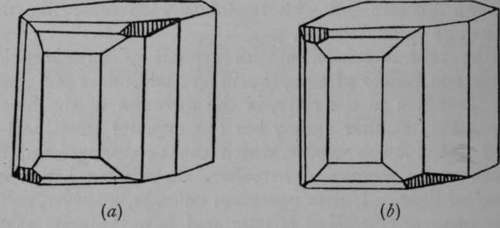
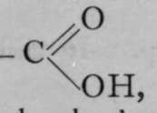

Stereo Chemistry. Part 2
Description
This section is from the book "Modern Chemistry", by William Ramsay. Also available from Amazon: Modern Chemistry: Theoretical and Modern Chemistry (Volume 2).
Stereo Chemistry. Part 2
Fig. 4.
The case is otherwise with crystals of tartaric acid. While one variety of tartaric acid crystal rotates the plane of polarisation to the right, in the direction of the hands of a watch, another variety has the opposite effect, and a third and a fourth variety, which can be distinguished by means to be mentioned hereafter, are without action on polarised light. Unlike potassium chlorate, however, solutions of these crystals of tartaric acid have the same effect as the crystals themselves; those which have a right-handed rotatory power retain that power even when dissolved ; the left-handed ones remain left-handed, and the neutral ones neutral.
In 1861, Louis Pasteur, at that time assistant to Professor Balard, of Paris, made a most important discovery. It was that crystals of dextro-rotatory or right-handed tartaric acid, which had hitherto been believed to be regular, were all characterised by small facets, developed only on one corner. The neutral tartaric acid, known as racemic acid, had no such facets ; but on crystallising a certain double salt of racemic acid containing ammonium and sodium, Pasteur discovered that two kinds of crystals were deposited ; spine wit'i facets on die right upper corner (see (rtJ'Fig. 5), and some with facets on the left corner. The facets in question are shaded in the figure. And most singularly, the crystals, after they had been picked out and separated from each other, when dissolved in water each rotated the plane of polarised light, the crystals with right facets to the right, those with left facets to the left. Up to that time only the dextro-rotatory tartaric acid had been known. From this Pasteur drew the inference that the difference between the two varieties must be due to the different arrangement of the atoms in the molecules of the two varieties of tartaric acid in space of three dimensions.
Fig. 5.
Pasteur also devised two other methods of separating the two varieties of tartaric acid contained in racemic acid : one was by preparing a salt of racemic acid with a base such as quinicine, which itself possesses optical properties. The salt of dextro-tartaric acid with this base is much more soluble than that of the left-handed or lasvo-rotatory tartaric acid ; so that the crystals which separate out on evaporating the solution are practically pure lasvo-tartrate. His other method of effecting the separation, or, in this case, the destruction of the dextro-tartrate, was by allowing a solution of racemate of ammonium to mould. The organism consumes the dextro-tartrate, and the laevo-tartrate remains after the mould has been suffered to grow for a sufficient time. It is only the dextro-compound, in fact, which serves as food for the mould.
In 1874, LeBel and van't Hoff independently propounded a theory to explain these and similar cases of isomerism ; it is based on the conception that all molecules occupy space of three dimensions, and that the isomerism is caused by the different arrangement of the atoms in the molecule. This arrangement also gives a clue to the behaviour of such isomers in rotating the plane of polarised light to the left or to the right, and also indicates why crystals composed of such molecules should develop " hemi-hedral " facets, as those represented on only one side of a crystal are termed.
It is not necessary to consider any particular compound in giving a sketch of this theory ; it may be stated in general terms.
Marsh-gas, or methane, it has already been remarked, has the formula CH4. We have already seen that one of the four atoms of hydrogen which it contains may be replaced by an atom of chlorine, and the chlorine by the group CH3, or methyl. It is possible to replace successively all four atoms of the hydrogen of methane by atoms or groups; these may be all different. If we indicate such atoms or groups by the letters P, Q, R, S, we may have the compounds CP3Q, CP2Q2, CP2QR, and CPQRS, as well as CP4. The stereo-chemical hypothesis is based on the conception that the carbon atom is situated at the central point of a pyramid built on a triangular base (which is named a tetrahedron}, and that the elements or groups in combination with the atom of carbon are placed at the four corners or solid angles of the figure, The formulae of the compounds, constructed in this manner, would present the appearance in perspective shown in Fig. 6.
It is evident, on inspection, that no isomerism is possible with the molecules numbered (1), (2), and (3), for in each case a mere turning of the tetrahedron into the appropriate position can place any group in any desired position relative to the others. Thus to take (3) ; if it be supposed that isomerism could result from the relative positions of groups R and Q with regard to the two groups P, it is only necessary so to turn the crystal that the position of the two P groups is reversed, when Q will lie at the remote corner, and R at the near corner. The case is different with the configuration in (4). If Q and R are transposed, as in (5), it is impossible so to place (4) that its groups, P, Q, R, and S, correspond in position with those in (5). In fact, (5) may be termed the " mirrorimage" of (4), for a reflection of (4) in a mirror is identical with (5). To choose a familiar illustration, it is not possible to convert a right hand into a left hand except by reflecting it in a mirror. In this sense, the right hand is a stereoisomer of the left hand. Now it is precisely such compounds, and only such compounds, which display isomerism of the kind described ; one variety of which causes the plane of polarised light to be rotated to the right, the other to the left. One of the most familiar instances of such isomerism has been observed with the acid of sour milk, lactic acid; in it, the carbon atom at the centre of the tetrahedron is coupled with four different atoms or groups, and is termed the " asymmetric " carbon atom. P may stand for an atom of hydrogen ; S for the hydroxyl group, - OH ; Q represents the methyl group, — CH3 ; and S the carboxyl group, 
Continue to: